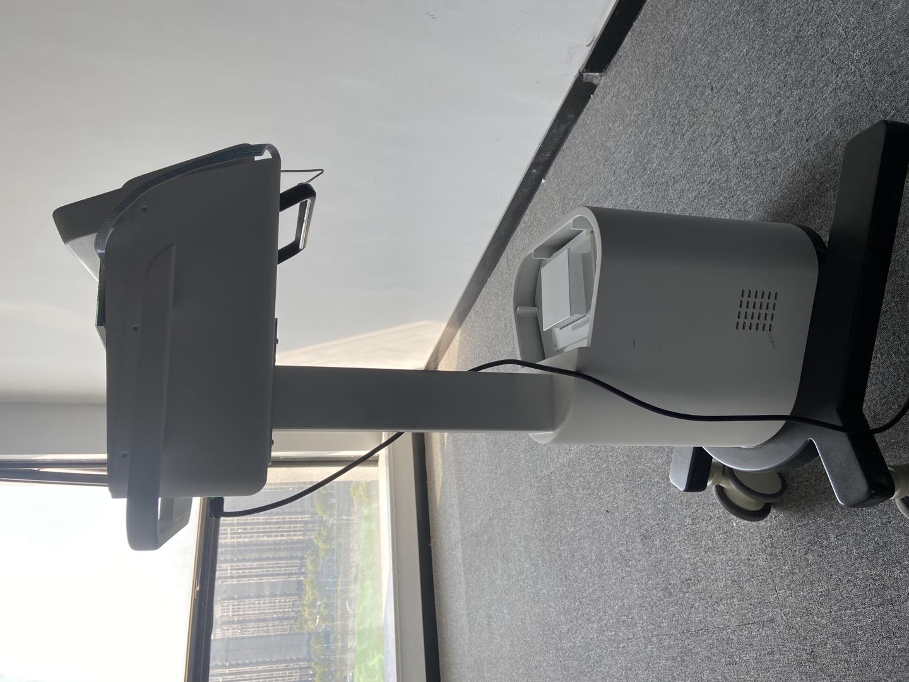
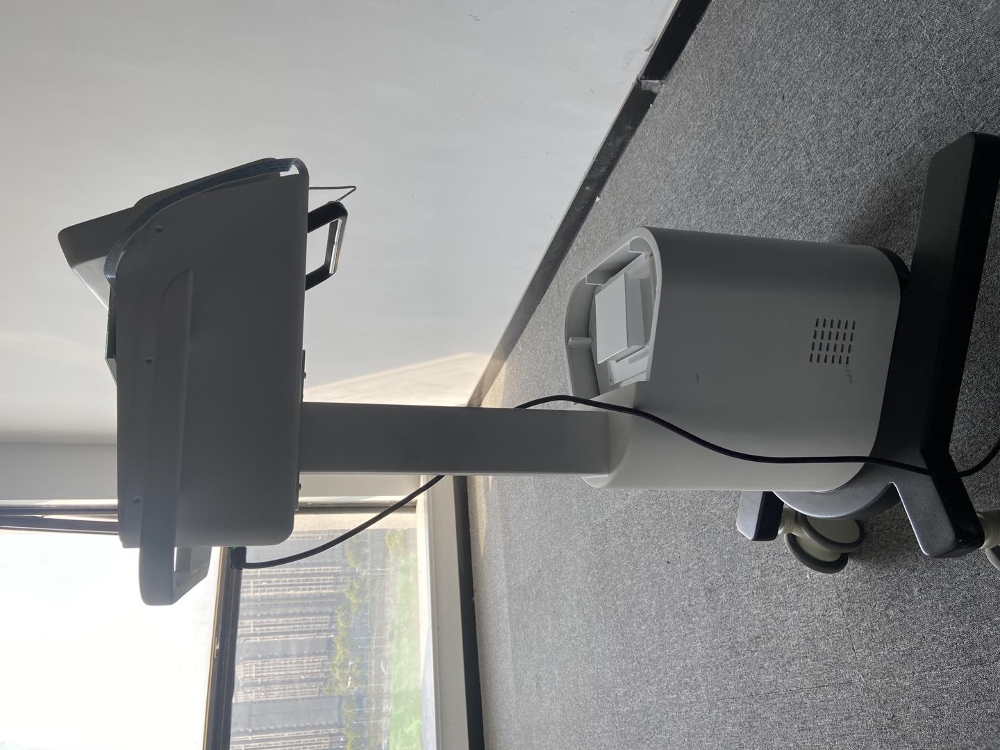

Tianchi Zhao
In June 2018, I graduated from Chongqing University of Science and Technology.
Around 2019, I joined the Engineering Department of Chengdu Chenglin CNC Tool Co., Ltd. as a Mechanical Engineer.
Around 2021, I took on the role of Project Leader at Nanjing Lego Medical Devices Co., Ltd.
Since September 2023, under the supervision of Professor Gongbo Zhou, I have been engaged in research in the fields of artificial intelligence, mechanical health monitoring, and signal processing, which I have found both fulfilling and enjoyable.
💼 Work Experience
Chengdu Chenglin CNC Tools Co., Ltd. – Mechanical Engineer (2019 ~)
- I participated in the development of new products (such as hydraulic tool holders) and the preparation of a complete set of technical documentation, including engineering drawings (Proe, CAD) and process sheets.
- I was responsible for designing turning and boring tools, including eccentric turning tools, modular tool heads, multi-hole boring tools, and fine-adjustable boring heads — all customized non-standard tools.
- Since tool manufacturing often requires on-site problem solving, I have accumulated extensive experience in machining operations and field support. I am also familiar with commonly used materials (42CrMo) and surface treatment processes such as quenching, tempering, blackening, and borax treatment.
Nanjing Lego Medical Devices Co., Ltd. – Project Manager (2021 ~)
- As the project leader for new products such as the photon therapy device and dry-heat sterilizer, I coordinated multiple departments—including procurement, electronics, and assembly—to ensure successful project completion, thereby gaining extensive experience in project management.
- By conducting in-depth research on competing products and designing the overall schematics, sheet metal components, light source modules, and heat dissipation systems using SolidWorks, I significantly enhanced my innovation capabilities.
- I was also responsible for drafting standard operating procedures and internal product specifications to guide production line personnel in prototype assembly, which fostered strong interpersonal and communication skills.
- In addition, through multiple business trips to regulatory agencies for medical device evaluation, I assisted in the inspection process (including risk analysis, technical specifications, and instruction manuals for the photon therapy device), further honing my technical communication abilities.
🛠 Master Research
Topic: Fault Diagnosis of Rolling Bearings in Mining Double-Toothed Roll Crushers under Complex Operating Conditions
- Built a test rig combining rolling bearings and a parallel gear reducer.
- authored a paper titled "A novel dual-core adaptive nonlocal sparse network for bearing fault diagnosis", aiming to enhance denoising performance of bearing signals under strong noise and improve diagnostic accuracy.
- Authored another paper titled "Enhancing interpretability via fine-grained targets: a manifold learning-based structured model for noisy condition bearing fault diagnosis", which successfully diagnoses three challenging bearing faults in noisy environments.
- Currently, a novel dictionary learning approach is being developed, based on permutation matrices and relaxed block-diagonalization, designed to align similar fault patterns across different domains through transposed matrix optimization, enabling robust cross-condition fault diagnosis.
🧠 Skills
- Proficient in SolidWorks, Proe, CAD.
- Familiar with solving multivariate convex optimization problems (e.g., block coordinate descent, ADMM).
- Skilled in programming with Python, C, and MATLAB.
- Experienced with various artificial intelligence models.
- Proficient in signal processing methods based on dictionary learning (convex formulations) and their variants.
 
